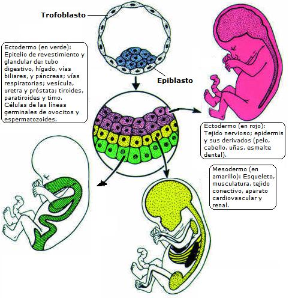

En el 2003 el doctor Stephen Minger y su equipo fue el primero en cultivar colonias de células embrionarias humanas en el Reino Unido. Con entusiasmo los científicos hablaban de los múltiples beneficios que traería transformar estas células madre en células cardíacas, cerebrales, pancreáticas y retinales. No obstante mientras los científicos británicos hablaban de éxito, otras voces protestaban airadas. En el 2004, el cardenal William Keeler, director del Comité de Actividades pro-vida de la Conferencia Episcopal Estadounidense y arzobispo de Baltimore, se refirió al anuncio de clonación de embriones humanos hechos por un equipo surcoreano como un “signo de regresión moral”. [1] Pero ¿qué son las células madre? ¿para qué se investigan? ¿qué implicaciones éticas tienen estas investigaciones? ¿Cuál es la posición humanista secular? Precisamente estas preguntas son el tema de este escrito.
¿Qué son las células madre?
Célula madre (stem cell en inglés) se define como una célula progenitora, capaz de regenerar uno o más tipos celulares diferenciados y con la capacidad de autorenovarse.
Todos los humanos, en nuestro desarrollo embrionario, pasamos por varias etapas en las primeras semanas del embrazo: cigoto (el óvulo fecundado), mórula, blastocisto, gástrula y neúrula. Es asombroso saber que en la etapa de blastocisto, que abarca de los días 6 - 14 después de la fecundación, todas las células están indiferenciadas, es decir no se han especializado en funciones particulares, pero estas mismas células darán origen a células especializadas en tareas concretas como lo son las neuronas, las células musculares, los glóbulos rojos o los osteocitos. Como todas las células del organismo provienen de las células del blastocisto se dice que son totipotenciales y reciben el nombre de células madre embrionarias (Embrionic stem o Escells en inglés).

Existen otro tipo de células madre, las “células madre órgano-específicas”. Estas células son pluripotenciales, derivan de divisiones celulares de las células madre embrionarias y tienen la capacidad de originar las células de un órgano específico tanto en el embrión como en el adulto. El ejemplo más notable de células madre órgano-específicas son las células de la médula ósea, las cuales son capaces de originar todas las células de la sangre y del sistema inmune. A la fecha los científicos han logrado aislar y cultivar células madre de adulto de la piel, grasa subcutánea, músculo cardíaco y esquelético, cerebro, retina y páncreas.
¿Para qué se investigan las células madre?
Una gran parte de las enfermedades que afectan a los seres humanos consisten en la degeneración y muerte de los distintos tejidos que conforman nuestro cuerpo. Los infartos [2], el mal de Alzheimer [3] y el mal de Parkinson [4] son de hecho ejemplos de desgaste natural de los tejidos.
La medicina ha logrado reparar los tejidos envejecidos o dañados por medio del desarrollo de los trasplantes [5]. Esta técnica ha hecho un impacto notable en el aumento de la esperanza y calidad de vida de miles personas cada año. Algo que era impensable hace unos siglos atrás. Sin embargo, los trasplantes de órganos tiene dos grandes limitaciones: la escasez de donantes y la posibilidad real del rechazo del órgano trasplanto.
Si miramos episodios como los infartos de miocardio y los cerebrales notaremos que los tejidos muertos no son susceptibles de repararse por los medios naturales del organismo. Es aquí donde los científicos exploran el desarrollo de técnicas que permitan cultivar y transplantar células madre, que gracias a su capacidad natural de regeneración sirva para el tratamiento de este tipo de enfermedades.
Muchos investigadores desean obtener material genético de células normales de un grupo de mujeres donantes y combinarlo con sus propios óvulos. Tales investigadores argumentan que debido a que las células llevan el genoma nuclear del individuo, después de diferenciarse pueden transplantarse sin que sean rechazados por el sistema inmunológico en tratamientos de desórdenes degenerativos.
En la actualidad las células madre se están utilizando para tratar tumores de cerebro, cáncer de ovario, de testículo, retinoblastoma [6], neuroblastoma [7], linfoma no de Hodgkings [8], carcinoma de células renales, y enfermedades autoinmunes [9] tales como la esclerosis múltiple [10], lupus eritromatoso sistémico [11], artritis reumatoide [12] y artritis reumatoide juvenil [13], entre otras. En cuanto a sus usos futuros se prevé recuperar a pacientes con derrames cerebrales, diabetes [14], enfermedad de Parkinson y aún más, se anhela recuperar con esta técnica a personas con parálisis [15].
Para obtener células madre embrionarias es necesario obtener varios blastocistos y luego destruirlos para trabajar con las células de forma independiente. Los embriones provienen en muchos casos de la fase de rutina de la fecundación in vitro (FIV) [16], pues para este tratamiento contra la esterilidad se extraen varios óvulos de la madre donante y luego son fertilizados en condiciones de laboratorio, después se procede a implantar los óvulos fecundados (no todos logran sobrevivir). En algunos casos quedan embriones congelados sobrantes, que pueden utilizarse para la investigación con células madre.

También existe la posibilidad de trabajar con células madre de adulto (u órgano-específicas) las cuales se pueden obtener del cordón umbilical de los recién nacidos, la médula ósea, la piel entre otros órganos. Este tipo de investigación no genera controversias éticas y según algunos científicos ofrece mejores beneficios. Otros sin embargo, creen que las células madre adultas solo pueden formar los tipos contenidos en su tejido de origen, además de ser más escasas y más difíciles de cultivar, por lo que abogan por que se permitan investigaciones tanto con células madre embrionarias y adultas.
El trabajo con células madre es una clonación, pero esta no tiene como fin la reproducción, por lo que recibe el nombre de clonación terapéutica (de hecho no hay un equipo de científicos que busque clonar humanos con fines reproductivos).
¿Qué implicaciones éticas tiene la investigación con células madre?
Médicos, biólogos, religiosos, políticos, juristas, filósofos y muchas personas más han empezado a debatir la investigación con células madre debido a la utilización de embriones. Los interrogantes de carácter ético son:
¿Es un embrión en la etapa de mórula o blastocisto un ser humano o apenas un cúmulo de células?
¿Cuándo se convierte en ser humano un embrión o feto? (He aquí la misma pregunta que ronda el tema de la legalización del aborto!)
¿En el momento de la fecundación (cuando se da la unión del óvulo con el espermatozoide)? ¿A la semana octava cuando el embrión tiene un cuerpo y una cabeza reconocible a pesar de no tener un cerebro plenamente formado? ¿A los cinco meses y medio cuando el feto responde a los sonidos y está en capacidad de sobrevivir si naciese? ¿Solo hasta el nacimiento?
¿Se hace bien al tomar a los embriones en la etapa de mórula o blastocisto como una “fábrica” de células madre?
¿Se hace bien al crear un embrión humano con el único objetivo de la investigación médica?
¿Predominan los derechos de un blastocisto a los de un anciano que acaba de sufrir un derrame cerebral o a los de un niño con una enfermedad incurable?
¿Prevalecen más los beneficios de la investigación en células madre que cualquier agravio que se pueda producir?
¿Deben utilizarse los embriones sobrantes de la FIV para la investigación con células madre, de no ser así cuál debe ser su destino?
¿Debería permitirse la utilización de células madre embrionarias si se pudiesen producir células madre igualmente buenas a partir de la médula ósea o de cualquier otro órgano?
¿Cuál es la posición humanista secular?
El principal argumento de los religiosos fundamentalistas, para oponerse a la investigación con células madre embrionarias fue el estatus de humano de los blastocistos. El Arzobispo Keeler hizo eco de la argumentación católica al afirmar en 2004 que: “Estas mujeres fueron utilizadas como fábricas de óvulos mientras sus descendientes embrionarios fueron tratados como nada más que objetos de investigación, su dignidad humana ignorada en nombre del progreso”. Tal declaración nos lleva de vuelta a la primera pregunta de la lista anterior: ¿Es un embrión en la etapa de mórula o blastocisto un ser humano o apenas un cúmulo de células?
Antes de intentar responder esta pregunta revisemos los acontecimientos que ocurren en los comienzos del desarrollo embrionario.
Los primeros días
En los seres humanos un embrión solo es posible tras la unión de un óvulo y un espermatozoide (en algunas especies de insectos y de lagartijas no se requiere la célula masculina). Los gametos - los óvulos y espermatozoides- son células vivas. La fecundación se da cerca del primer tercio de las trompas de Falopio y allí los espermatozoides empiezan a luchar por atravesar las barreras que dificultan su encuentro con la célula huevo. Tras la fusión de los gametos se inicia una serie de rápidos procesos. Las actividades metabólicas sufren un decisivo despertar, y se culmina el proceso de meiosis en la célula femenina dando origen a un óvulo haploide (célula con solo 23 cromosomas).
El ovocito fertilizado activa luego el llamado “bloqueo de la polispermia”, que impide a los otros espermatozoides penetrar en él. Esto ocurre al aumentar de forma rápida el aumento de la concentración interna de iones calcio. Luego el material de los dos pronúcleos, masculino y femenino, se duplican y condensan (es decir los cromosomas se hacen visibles) y luego se forma el huso mitótico de la primera división celular. Treinta horas después del comienzo de la fecundación se da la primera división celular que da origen a un embrión de dos células y después se dividirá sucesivamente en 4, 8, 16 y 32 células (fase que se conoce como mórula, formada por células madre embrionarias). En algunos casos, durante los tres o cuatro días después de la fecundación, se pueden despegar algunas células totipotentes que darán lugar a otro ser humano completo. Resultarían entonces dos gemelos monocigóticos (con la misma información genética).

Luego se pasa a la fase de blastocisto, en la cual el embrión tiene el aspecto de una esfera hueca llena de líquido. En el blastocisto se diferencian dos regiones: el trofoblasto y la masa celular interna. Sólo una parte de la masa celular interna, el epiblasto, formado por células pluripotentes, dará lugar al nuevo ser. El resto de las células originará la placenta, corion y otros estructuras extrafetales. En la etapa de blastocisto el embrión humano consta de 180 células e iniciará el contacto con la pared interna del útero (endometrio), donde comienzan a implantarse a partir del 6º -7º día.
El embrión se enquista progresivamente en la mucosa uterina, rodeándose de los capilares de los vasos sanguíneos maternos. En el mismo sitio donde se realizó el implante se formará progresivamente la placenta.
Durante estos primeros instantes el embrión de un humano, un chimpancé, un mono ardilla o un ratón no se pueden distinguir. Lo que hace que un cigoto fecundado generé un humano o un gorila es su programa genético, pues los genes controlan los procesos de especialización y desarrollo de estas células animales.
Un proceso continuo
La naturaleza humana del embrión, así como muchos fenómenos biológicos, son de carácter gradual y continuo. Este hecho no es tenido en cuenta por las personas que entran a debatir la naturaleza del blastocisto.
En el ensayo “Conozca a mi primo el chimpancé” Dawkins dice:
“Los partidarios autodenominados pro-vida, y otros que se dedican a debates absurdos sobre donde exactamente en su desarrollo el feto “se vuelve” humano, exhiben la misma mentalidad discontinua. Es inútil decirles a esas personas que, dependiendo de que características te interesan, un feto puede ser “medio humano” o “un centésimo humano”. “Humano”, para una mente discontinua, es un concepto absoluto. No puede haber termino medio.”
Los filósofos denominan “la falacia del continuum” al argumento que dice que pequeñas diferencias en una serie continua de sucesos son irrelevantes, o que posiciones extremas, conectadas por pequeñas diferencias intermedias, son la misma cosa porque no podemos establecer un límite objetivo para el cambio. El filósofo griego Eubilides de Mileto notó esta falacia cuando argumento: ” -¿Dos granos de trigo son montón de trigo?-No. -¿Y añadiéndoles otro grano? -Tampoco. -¿Y añadiendo otro? -Tampoco. -Luego nunca habrá montón, mientras se añadan uno a uno. [17]” La falacia del continuum llega a afirmar que no existen diferencias entre los extremos o que, si existen, cualquier límite que pretendamos establecer será arbitrario. Este segundo punto es el que toman los detractores de la investigación con células madre (y los del uso de la píldora del día siguiente) cuando afirman que como el desarrollo del cigoto al bebe es continuo y como no se puede tomar un punto exacto en el que la naturaleza cambie abruptamente la destrucción de un blastocisto es igual al asesinato de un bebe. Que no conozcamos el momento en que se producen los cambios no significa que las cosas no cambien. Un blastocisto no es una persona, como una semilla no es un árbol.
Hay otro aspecto en la concepción de la vida que posee grandes implicaciones políticas, sociales y religiosas al analizar las investigaciones con células madre embrionarias. El Arzobispo Keeler y los demás creyentes fundamentalistas son dualistas, es decir creen que los humanos son seres formados por dos entidades, una material y otra metafísica: el cuerpo y el alma. Los biólogos y muchos médicos mantienen una visión organicista de la vida. En la visión organicista un ser vivo es un sistema abierto que es mucho más que la suma de sus partes, organizado jerárquicamente en niveles de complejidad creciente (atómico, molecular, celular, tejido… etc.) con capacidad de homeostasis, reproducción y regulado por un programa genético. La visión organicista no recurre a entidades metafísicas - como el alma - en sus explicaciones. [18]
Es claro que la fecundación no es el inicio de la vida, pues los gametos están vivos al momento de la fertilización. Pero nadie considera la muerte de un espermatozoide como un homicidio. ¿Dónde comienza la vida humana?. La Iglesia Católica, al igual que muchas otras, sostienen que la vida humana inicia en el momento de la fecundación [19]. Sin embargo, como se mencionó anteriormente la fecundación es un proceso que puede llevar de dos a 12 horas. Igual de importante es el reconocimiento que, hasta 14 días después de la fecundación, el embrión puede dividirse, formando gemelos o trillizos. Este “argumento de la gemelización” tiene gran peso contra el punto de vista que sostiene que la vida humana comienza en el instante de la fecundación. Muchos creyentes se sienten confundidos en este punto porque según los teólogos el alma no se puede dividir, por lo que podrían afirmar que el alma no penetra al cigoto.
A pesar que muchos creyentes se sienten confundidos por el “argumento de la gemelización” para señalar el punto en el que el alma llega al embrión, no cabe duda que todos ellos siendo dualistas responderán que el alma es aquello que nos hace diferentes de los otros animales (si es que algunos de ellos admiten que pertenecemos al reino animal). Los organicistas señalarán que aquello que nos diferencia del resto de la vida animal es nuestro complejo y evolucionado cerebro que generan una mente como la naturaleza jamás había conocido.
Muchos científicos adoptan como característica distintivamente humana su electroencefalograma o EEG (El electroencefalograma es una técnica utilizada para la obtención del registro de la actividad eléctrica del cerebro a través de unos electrodos situados en la superficie del cráneo.). Sin embargo, no es hasta la octava semana de gestación, aproximadamente, cuando un embrión en desarrollo da muestras de un EEG detectable, y, por lo tanto, de los fundamentos para unos comportamientos neuronales esenciales para la existencia de actividad cerebral.
Si aceptamos que nuestro particular cerebro es lo que nos hace humanos, y que la presencia de un EEG detectable marca el inicio de la vida humana existiría un espacio de tiempo hasta la octava semana, durante el cual la investigación con células embrionarias, podrían llevarse a cabo sin tener que asumir esta práctica como un asesinato. Los humanistas seculares actualmente creemos que las terapias con células madre darán lugar a una revolución médica tan importante como lo fue el descubrimiento de los antibióticos, por lo que estamos a favor que se investiguen tanto células embrionarias adultas [20] y embrionarias por igual, a fin de mejorar el bienestar humano.

Notas:
Volver a la sección Sociedad y religión
Comentarios
Comments powered by Disqus